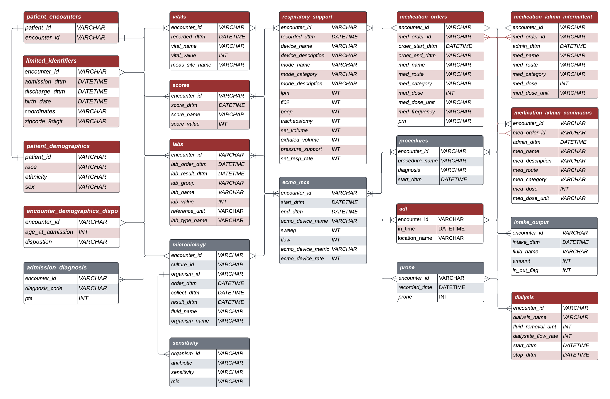

Relational CLIF has 20 tables that are organized into clinically relevant column categories - demographics, objective measures, respiratory support, orders and inputs-outputs. Below are sample templates for each table in R-CLIF.

Patient_encounters
- patient_id is an ID variable for each patient
- encounter_id is an ID variable for each patient encounter (a given patient can have multiple encounters)
Patient_demographics
- patient_id is an ID variable for each patient
- race description of patient’s race. Categories include Black or African-American, White, American Indian or Alaska Native, Asian, Native Hawaiian or Other Pacific Islander, Unknown, Other
- ethnicity description of patient’s ethnicity. Categories include Hispanic or Non-Hispanic
- sex is the patient’s biological sex - Male or Female
Limited_identifiers
- encounter_id is an ID variable for each patient encounter (a given patient can have multiple encounters)
- admission_dttm is the date and time the patient is admitted (in the format %Y-%m-%d %H:%M:% )
- discharge_dttm is the date and time the patient is discharged (in the format %Y-%m-%d %H:%M:% )
- birth_dttm is the date of birth
- coordinates provide patient coordinates
Encounter_demographics_disposition
- encounter_id is an ID variable for each patient encounter (a given patient can have multiple encounters)
- age_at_admission is the age of the patient at the time of admission (in the format %Y-%m-%d %H:%M:% )
- disposition is the description of disposition when discharged. Categories include Home, Hospice, Discharged to another facility, Dead, Admitted and Other
Vitals
- encounter_id is an ID variable for each patient encounter ( a given patient can have multiple encounters )
- recorded_time is the date and time when the vital is recorded
- vital_name includes a limited number of vitals, namely - temp(C), pulse, sbp, dbp, sp02, respiration, map, height_in, weight_kg
- vital_value is the recorded value of the vital identified by the CLIF consortium
- meas_site_name is the site where vital is recorded. It has three categories - arterial, core, not specified.
Labs
- lab_order_time is the date and time when the lab is ordered
- lab_order_time is the date and time when the lab results are available
- lab_group includes a limited number of labs that are categorized into five groups - ABG, BMP, CBC, Coags, LFT, Lactic Acid, Misc, VBG
- lab_name includes a limited number of labs identified by the CLIF consortium
- lab_value is the recorded value corresponding to a lab_name
- reference_unit is the unit of measurement for that lab
- lab_type_name has three categories - arterial, venous and standard/proc
Respiratory_support
- recorded_time is the date and time when the device started (in the format %Y-%m-%d %H:%M:% )
- device_name includes a limited number of devices identified by the CLIF consortium, namely - Vent, NIPPV, High Flow NC, Face Mask, Trach Collar, Nasal Cannula, Room Air, Other
- mode_name includes a limited number of modes identified by the CLIF consortium
- mode_category includes a limited number of mode categories identified by the CLIF consortium, namely - pressure, volume, spontaneous
- lpm is liters per minute
- fiO2 is fraction of inspired O2
- peep is positive-end-expiratory pressure
- set_volume is measured in mL
- pressure_support measured in cmH2O
- set_resp_rate measured in bpm
ADT
- encounter_id is an ID variable for each patient encounter (a given patient can have multiple encounters)
- in_time start date and time at a particular location (in the format %Y-%m-%d %H:%M:% )
- location_name is the location of the patient inside the hospital. Categories include ER, OR, ICU, Ward, and Other
Medication_admin_continuous
- encounter_id is an ID variable for each patient encounter (a given patient can have multiple encounters)
- med_order_id a unique ID for med_order placed
- admin_time start date and time for medication administration
- med_name medication name
- med_category medication category
- med_route eod of medicine delivery
- med_dose quantity taken in dose
- med_dose_unit unit of dose